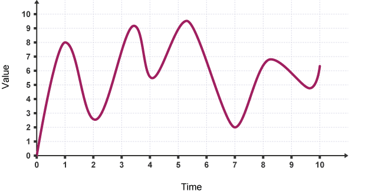
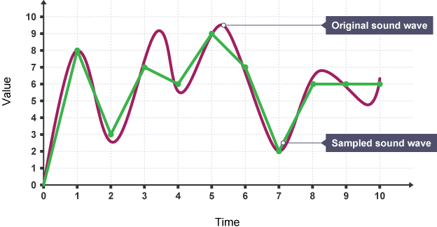

Licenca
To delo je na voljo pod pogoji slovenske licence Creative Commons 2.5:
priznanje avtorstva - nekomercialno - deljenje pod enakimi pogoji.
Celotna licenca je na voljo na spletu na naslovu http://creativecommons.org/licenses/by-nc-sa/2.5/si/. V skladu s to licenco je dovoljeno vsakemu uporabniku delo razmnoževati, distribuirati, javno priobčevati, dajati v najem in tudi predelovati, vendar samo v nekomercialne namene in ob pogoju, da navede avtorja oziroma avtorje in izdajatelja tega dela. Če uporabnik delo predela, kar pomeni, da ga spremeni, preoblikuje, prevede ali uporabi to delo v svojem delu, lahko predelavo dela ponudi na voljo le pod pogoji, ki so enaki pogojem iz te licence oziroma pod enako licenco.

Zapis zvoka
Da lahko z računalnikom obdeluješ zvok, ga moraš najprej pretvoriti v dvojiško obliko. Zvok pretvoriš tako, da ga posnameš – običajno z mikrofonom – ter nato pretvoriš v digitalni signal.
Analogno-digitalni pretvornik bo vzorčil (angl. sample, sampling) zvočno valovanje v rednih časovnih presledkih. Na primer, zvočno valovanje (angl. sound wave), kot je to, lahko vzorčiš na vsaki časovni točki:

Časovne vzorce nato pretvoriš v dvojiško obliko. Zaokroženi bodo na najbližje celo število.
| Časovni vzorec | 1 | 2 | 3 | 4 | 5 | 6 | 7 | 8 | 9 | 10 |
|---|---|---|---|---|---|---|---|---|---|---|
| Desetiška vrednost | 8 | 3 | 7 | 6 | 9 | 7 | 2 | 6 | 6 | 6 |
| Dvojiška vrednost | 1000 | 0011 | 0111 | 0110 | 1001 | 0111 | 0010 | 0110 | 0110 | 0110 |
Če časovne vzorce narišeš na isti graf, lahko opaziš, da zvočno valovanje sedaj izgleda drugače. To je zato, ker vzorčenje ne upošteva, kaj se z zvočnim valovanjem dogaja med vsako časovno točko vzorčenja.

To pomeni, da zvok izgubi kakovost, saj je bilo nekaj podatkov med časovnimi vzorci izgubljenih. Način za povečanje kakovosti in shranjevanje zvokov v kakovosti, ki je bližje originalu, je, da uporabiš več časovnih vzorcev, ki so bližje skupaj. Na ta način lahko zbereš več podrobnosti o zvoku. Tako se pri pretvorbi v digitalno in nazaj v analogno obliko ne izgubi toliko kakovosti.
Frekvenca vzorčenja se imenuje stopnja vzorčenja (angl. sample rate), kar pomeni, koliko vzorcev na sekundo shraniš. Frekvenca vzorčenja se meri v Hertzih (Hz). 1 Hz je en vzorec na sekundo. Večina zvočnih posnetkov CD-kakovosti se vzorči pri 44,1 kHz (44100 vzorcev na sekundo) ali 48 kHz (48000 vzorcev na sekundo).
Različni formati zvočnih datotek
Ko zvok zajamemo, da običajno shranimo v nestisnjeno zvočno datoteko v formatu WAV. Zaradi bolj ekonomičnega shranjevanja in izmenjave podatkov je smiselno, da zvočne datoteke stisnemo. Najobičajnejši formati stisnjenih zvočnih datotek so MP3, OGG, AIFF in drugi. Izkaže se, da ima pythonov modul pygame, ki ga bomo uporabljali, najmanj težav pri predvajanju zvočnih datotek v formatu Ogg Vorbis (OGG). Zato bo najbolje, da zvočne datoteke, ki jih želiš uporabiti v tem ali drugih projektih, najprej pretvoriš v ta format. To lahko narediš na primer s programom Audacity, ali pa uporabiš kakšno spletno storitev za pretvarjanje med različnimi formati zvočnih datotek.